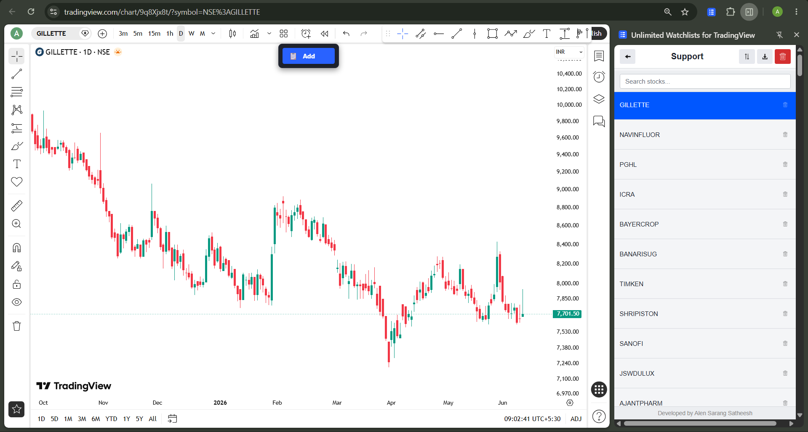
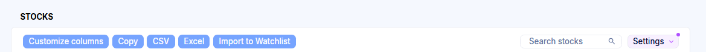
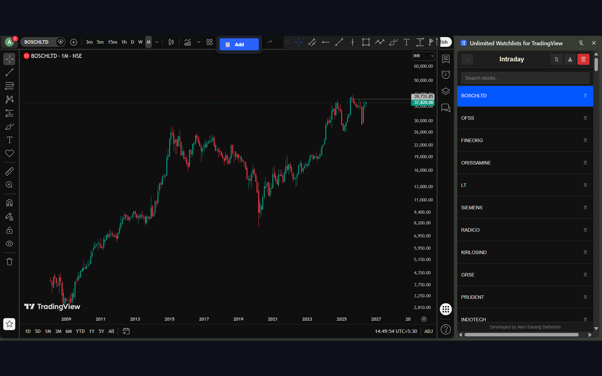
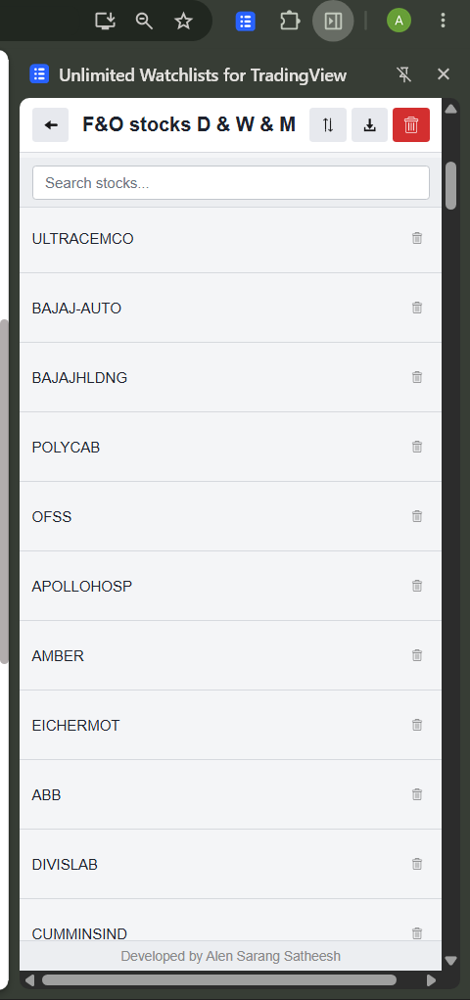
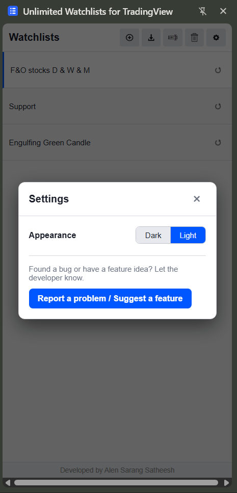

Unlimited watchlists
for TradingView
A lightweight Chrome side panel for every symbol you track. Import stocks from Chartink screeners or CSV, organize as many watchlists as you want, and open any chart on TradingView with a single click.
No account · No tracking · Press Space to cycle symbols

Everything a watchlist should do.
Without the limits.
TradingView caps your watchlists — this side panel doesn't. Build as many as your strategy needs.
Unlimited watchlists
Create, rename, reorder and delete as many watchlists as you need — right in the browser side panel.
One-click charts
Click any symbol to instantly open or switch its chart on TradingView. Press Space to cycle through the list.
Import from Chartink
Pull every stock from a Chartink screener into a watchlist named after that screener — one button on the screener page.
One-click re-sync
Imported screeners remember their Chartink URL. Hit the re-sync button anytime to refresh the list with today's results.
CSV import
Bulk-add symbols from a CSV file. Imports create or update a watchlist named after the file.
Search, sort & drag
Filter symbols as you type, sort A–Z, and reorder watchlists or stocks with drag-and-drop.
Dark & light themes
Match your TradingView setup. Switch themes from Settings — your choice is remembered.
Add from TradingView
A floating "Add to Watchlist" button on TradingView pages saves the current symbol to any of your lists.
Private by design
Your watchlists never leave your device. No accounts, no analytics, no ads — ever.
From Chartink screener to TradingView chart in seconds
Stop copying symbols by hand. Turn any Chartink scan into a living watchlist.
Open any Chartink screener
Run your scan on chartink.com as usual. The extension adds an Import to Watchlist button right next to Chartink's own toolbar.
Click "Import to Watchlist"
Every stock in the results is captured — including all pages — and saved into a watchlist named after the screener.
Re-sync whenever you like
The watchlist remembers its screener. One click on the re-sync icon pulls in today's fresh results — no re-importing.


Up and running in under a minute
Open the side panel
Install the extension and open it from Chrome's side panel — it sits beside any tab you're on.
Create a watchlist
Click the + button to create a list. Make one per strategy, sector, or timeframe — there's no cap.
Add your symbols
Import from a Chartink screener or CSV file, or use the floating Add button on any TradingView page.
Fly through charts
Click a symbol to open its TradingView chart. Press Space to jump to the next one in the list.
Take a look around
Light or dark — the panel stays out of your way and next to your charts.





Frequently asked questions
Is the extension free?
Yes — completely free, with no premium tier, no ads, and no account required. Unlimited means unlimited.
Where is my data stored? Do watchlists sync between devices?
Everything is stored locally in your browser using Chrome's storage.local API. Nothing is uploaded anywhere, which also means watchlists don't sync between devices. You can export a list to CSV and import it on another machine.
Does it work with a free TradingView account?
Yes. The extension simply opens and switches standard TradingView chart pages, so it works with any TradingView plan — including the free one. That's the point: TradingView's free plan limits your watchlists, this extension doesn't.
How does the Chartink import work?
Open any screener on chartink.com and click the Import to Watchlist button the extension adds to the page. All result symbols are saved into a watchlist named after the screener. The list keeps the screener's URL, so you can re-sync it with one click whenever the scan results change.
What data does the extension collect?
None. No analytics, no tracking, no accounts. The only network requests it makes are to chartink.com (when you import or re-sync a screener) and tradingview.com (when you open a chart). Read the full Privacy Policy.
Is this affiliated with TradingView or Chartink?
No. This is an independent tool built by an individual developer. It is not affiliated with, endorsed by, or sponsored by TradingView or Chartink. All trademarks belong to their respective owners.
Your watchlists, without the limits.
Free, private, and one click away from your next chart.
Add to Chrome — it's free